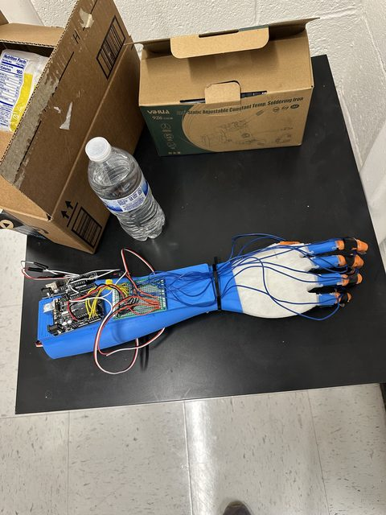
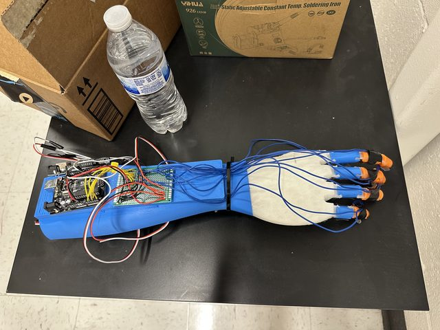
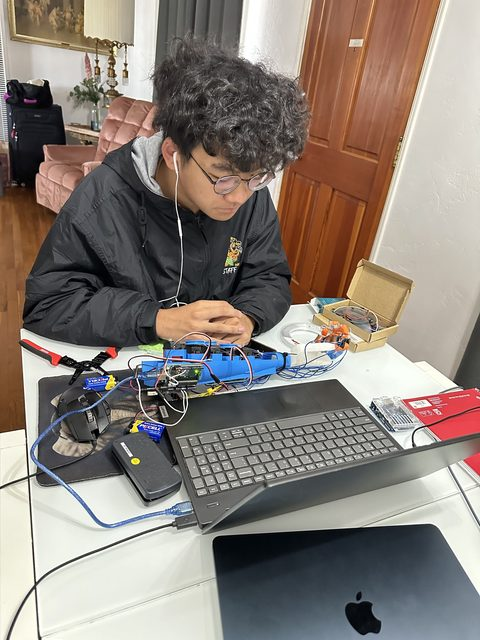
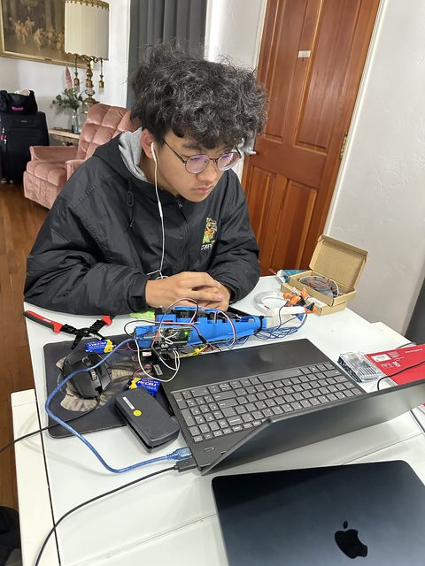

Additive Manufacturing of an Anthropomorphic Hand using Force Resistive Sensors for Object Detection
Journal of Future Science and Engineering (JFSE) · Submitted August 2026, in review
First author · SDSU Yang Lab · Jun 2026 – Sept 2026
A multimaterial 3D-printed robotic hand with film pressure sensors that identifies what it is holding at 98.1% accuracy.




Outcome
A random forest model trained on 4,500 rows and tested on 1,000 rows classified four objects from force-sensor input at 98.1% accuracy — showing AM plus low-cost force resistive sensors can produce a bioinspired hand with object detection.
Why
Current robotic hands are limited in grip-force sensitivity and cost. A clinically prescribable, commercially available prosthetic can cost upwards of $20,000 USD.
Method
Multimaterial FDM printing — PLA for the fingers and arm, TPU for the joints and palm — with force resistive sensors integrated to read pressure during grasp. Training data was collected by repeatedly grasping four distinct objects.
What it means
Accurate object detection from grasp pressure alone opens paths into adaptive grasp, soft robotics, smart prosthetics, human-skin biomimicry, and material-aware computer vision.